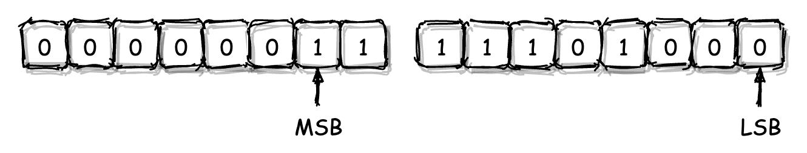
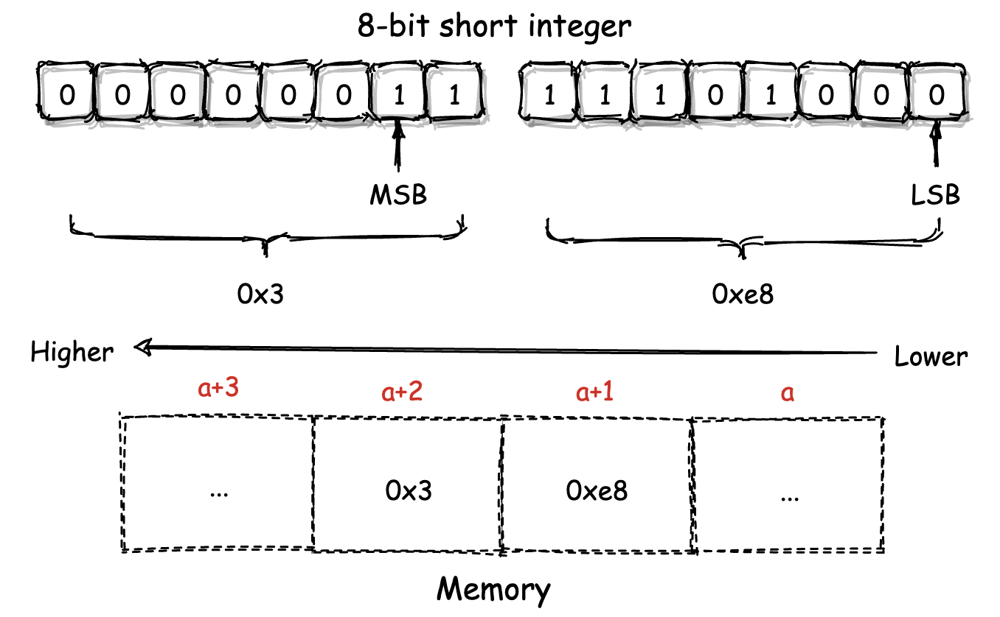
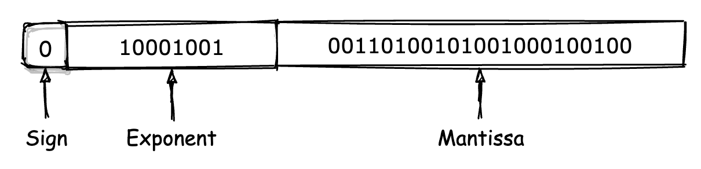
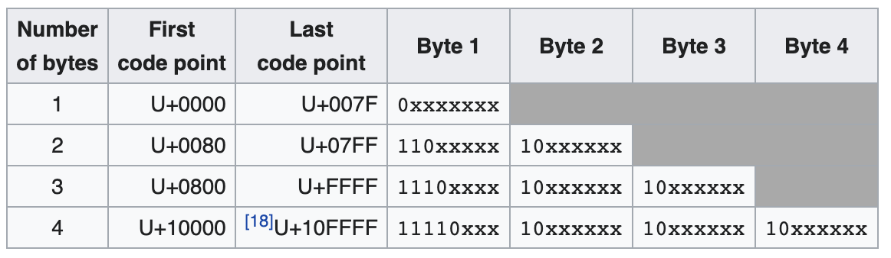

- 00 开篇词 我们为什么要了解 WebAssembly？.md.html
- 01 基础篇：学习此课程你需要了解哪些基础知识？.md.html
- 02 历史篇：为什么会有 WebAssembly 这样一门技术？.md.html
- 03 WebAssembly 是一门新的编程语言吗？.md.html
- 04 WebAssembly 模块的基本组成结构到底有多简单？.md.html
- 05 二进制编码：WebAssembly 微观世界的基本数据规则是什么？.md.html
- 06 WAT：如何让一个 WebAssembly 二进制模块的内容易于解读？.md.html
- 07 WASI：你听说过 WebAssembly 操作系统接口吗？.md.html
- 08 API：在 WebAssembly MVP 标准下你能做到哪些事？.md.html
- 09 WebAssembly 能够为 Web 前端框架赋能吗？.md.html
- 10 有哪些已经投入生产的 WebAssembly 真实案例？.md.html
- 11 WebAssembly 在物联网、多媒体与云技术方面有哪些创新实践？.md.html
- 12 有哪些优秀的 WebAssembly 编译器与运行时？.md.html
- 13 LLVM：如何将自定义的语言编译到 WebAssembly？.md.html
- 14 有哪些正在行进中的 WebAssembly Post-MVP 提案？.md.html
- 15 如何实现一个 WebAssembly 在线多媒体处理应用（一）？.md.html
- 16 如何实现一个 WebAssembly 在线多媒体处理应用（二）？.md.html
- 17 如何实现一个 WebAssembly 在线多媒体处理应用（三）？.md.html
- 18 如何进行 Wasm 应用的调试与分析？.md.html
- 19 如何应用 WASI 及其相关生态？.md.html
- 20 总结与答疑.md.html
- 结束语 WebAssembly，未来已来.md.html
- 捐赠
05 二进制编码：WebAssembly 微观世界的基本数据规则是什么？
你好，我是于航。
在上节课的最后，我举了一个简单的例子，来帮助你理解了 Wasm 二进制模块内部字节码的基本结构。在这短短的几十个十六进制数字中，我们看到了组成 Wasm 模块所不可或缺的“魔数”与“版本号”编码，以及组成了各个 Section 结构的专有编码。
在这些字节码中，Wasm 会使用不同的编码方案来处理不同的字段数据。比如对于 Section 的通用头部结构来说，Wasm 会用名为 “varuint7” 的编码方式，来编码各个 Section 的专有 ID。
除此之外，对于字符串以及浮点数，Wasm 也会分别通过 UTF-8 以及 IEEE-754 编码来将这些字面量值转换为对应的二进制编码，并存储到最终的 Wasm 二进制模块文件中。
那么本节课，我们就来一起看看 Wasm 所使用的这些数据编码方式，它们决定了 Wasm 在二进制层面的具体数据存储规则。
字节序
首先，作为字节码组成方式最为重要的一个特征，我们来聊一聊与具体编码方案无关的另外一个话题 —— 字节序。
那么什么是“字节序”呢？相信仅从字面上理解，你就能够略知一二。字节序也就是指“字节的排列顺序”。在计算机中，数据是以最原始的二进制 0 和 1 的方式被存储的。在大多数现代计算机体系架构中，计算机的最小可寻址数据为 8 位（bit)，即 1 个字节（byte）。
因此，我们通常将 1 字节定义为一个存储单元的大小。对于连续占用了多个存储单元的数据，我们通常称之为“多字节数据”，组成这段数据的每个字节都会地址连续地进行存放。
比如，在 C/C++ 中，一个 short 类型的变量便是一个多字节数据。假设我们有一个该类型的变量，其值为 1000。如下图所示，我们将该值在内存中的实际二进制存放形式展示如下。

对于一个多字节数据，我们会将其二进制形式下，用于组成该数字值的最低有效数字位与最高有效数字位，分别称为这个数据的“最低有效位（LSB，Least Significant Bit）”和“最高有效位（MSB，Most Significant Bit）”。如上图我们所标记出的那样。
而当计算机将这个多字节数据存放到物理内存中时，一个对于存储方式的不同抉择便出现了。
我们是应该选择将多字节数据的 LSB 位，存放到物理内存的低地址段（也就是相应地把 MSB 位存放到高地址段）；还是相反地，应该将多字节数据的 LSB 位，存放到物理内存的高地址段（即将 MSB 位相应地存放到低地址段）呢？实际上这两种方式均有被业界所使用，它们分别被称为“小端模式”与“大端模式”。
小端模式（Little-Endian）
小端模式即“将多字节数据的 LSB 位存放到内存的低地址位，相应地将 MSB 位存放到内存的高地址位”。
为了能够让你对这个概念有一个更加直观的理解，你可以参考下面的这张图。这张图是之前我们提到的，那个存储着值 1000 的 short 类型变量，在以“小端模式”进行存放时的内存结构图。

你可以看到，这个 short 类型变量值的 LSB 位所对应的低 8 位数据（0xe8），被存放到了内存的低地址位单元（a+1）中。 MSB 位对应的高 8 位数据（0x3）则被存放到了内存的高地址单元（a+2）中。而这便是“小端模式”所独有的特征。
大端模式（Big-Endian）
相信当你理解了小端模式后，对于“大端模式”便可以举一反三。与小端模式相反，在大端模式下，多字节数据的 LSB 位所对应部分会被存放到内存的高地址位，而 MSB 对应的部分则会被存放到内存的低地址位。也就是说，将上图内存中两个存储单元所存放的数据 0x3 与 0xe8 的位置相互调换后，便是大端模式下的数据存储方式。
实际上，大端模式与小端模式两者并没有优劣之分，这两种模式均被广泛地应用在基于不同处理器架构的计算机和一些特殊的应用场景中。在本文接下来的内容中，我们将会讲解 Wasm 二进制数据编码与字节序的一些关系。
LEB-128 整数编码
LEB-128 的全称为 “Little Endian Base 128”，是一种用于整数的、基于小端模式的可变长编码。所谓“可变长编码”，是指源数据在经过编码后，所得到的目标编码结果长度并不固定。依据不同的输入数据会得到不同长度的编码结果。
LEB-128 编码通常可以被分为两种更为具体的形式，即 “Unsigned LEB-128” 与 “Signed LEB-128”。其中前者仅用于编码无符号整数，后者主要用于编码有符号整数。
在无符号整数中，没有符号位，也就是说在该类型所对应大小范围内的所有比特位，都可以用来保存整数值的一部分。相反，在有符号整数中，类型首位会被用作符号位。
接下来，我们将分别讲解这两种 LEB-128 编码方式的具体编码规则。
Unsigned LEB-128
假设这里我们使用 Unsigned LEB-128 来编码一个正整数 123456。编码的具体步骤如下所示。
第一步：首先将该十进制数转换为对应原码（与补码相同）的二进制表示方式。
11110001001000000
第二步：将该二进制数用额外的 “0” 位进行填充，直至其总位数达到最近的一个 7 的倍数。注意这里我们只能够在该数字最高位的左侧进行填充，这样才不会影响数字原本的值。这种为无符号数进行位数扩展的方式我们一般称之为“零扩展”。
000011110001001000000
第三步：将该二进制数以每 7 个二进制位为一组进行分组，每组之间以空格进行区分。
0000111 1000100 1000000
第四步：在最高有效位所在分组的左侧填充一个值为 “0” 的二进制位。而在其他分组的最高位左侧填充一个值为 “1” 的二进制位。
00000111 11000100 11000000
第五步：将上述二进制位分组以每组为单位，转换成对应的十六进制值，即为编码所得结果。
0x7 0xc4 0xc0
到这里，一次对无符号（Unsigned）整数进行的 LEB-128 编码过程便完成了。对于 Unsigned LEB-128 编码的解码过程，实质上与编码过程完全相反，你可以试着自己去推导看看，能不能从 “0x7 0xc4 0xc0” 这三个十六进制数字解码到原先的无符号整数值 123456。
Signed LEB-128
Signed LEB-128 的编码过程，实质上与 Unsigned LEB-128 十分类似。假设我们用它来编码一个有符号的负整数 -123456。编码的具体流程如下所示。
第一步：首先，我们需要将该数字转换为对应的二进制表示形式。这里需要注意的是，由于 -123456 为一个有符号数，因此在编码时我们需要使用它的补码形式。在下面这段二进制编码中，第一位是符号位，这里的 “1” 表示该二进制序列所对应的十进制数是一个负数。
100001110111000000
第二步：在这一步中，我们需要对这个有符号数进行“符号扩展”操作。所谓“符号扩展”是指对二进制数的最高位，也就是符号位，其左侧填充指定的二进制位来增加整个有符号数的总位数，并同时保证该二进制数本身的值不会被改变。
因此，对于负整数来说，我们需要为其填充 “1”，而正整数则填充 “0”。与 Unsigned LEB-128 类似，这里我们要对其进行符号扩展，直到这个二进制数的总位数达到最近的一个 7 的倍数。
111100001110111000000
第三步：将这个二进制数以每 7 个二进制位为一组进行分组，每组之间以空格进行区分。
1111000 0111011 1000000
第四步：同样地，在最高有效位所在分组的左侧填充一个值为 “0” 的二进制位。而在其他分组的最高位左侧填充一个值为 “1” 的二进制位。
01111000 10111011 11000000
第五步：将上述二进制分组以每组为单位，转换成对应的十六进制值，即为编码所得结果。
0x78 0xbb 0xc0
你可以看到，Signed LEB-128 与 Unsigned LEB-128 在编码规则上的不同，仅体现在整个编码 流程的前两步。这两步的不同主要是由于无符号数与有符号数在计算机内的实际存储方式不同。
另外还需要注意的是，我们经过编码计算所得的结果，需要按照“小端模式”的方式存放在内存中，这也是 LEB-128 编码的一个重要特征。不仅如此，当在实际应用 LEB-128 编码时，有时由于所编码数字有着固定的大小（比如 64 位），因此会导致实际的编码结果中可能会含有特殊的“填充字节”，比如 “0x80” 与 “0xff”。
IEEE-754 浮点数编码
IEEE-754 是一种用于进行浮点数编码的行业标准。你几乎可以在任何与浮点数编码有关的应用场景中看到它的存在。在这一节中，我将以 IEEE-754-1985（后面简称为 IEEE-754）标准为例，来给你介绍浮点数编码的具体方式。
在 IEEE-754 标准中规定，一个浮点数由三个不同的部分组成，即“符号位”、“指数位”与“小数位”。这里我们以 32 位浮点数 “1234.567” 为例，来介绍它在 IEEE-754 下的实际编码结构。
首先，32 位的最高位，也就是其 MSB 位会被符号位占用，以标记该浮点数的正负性。同整数一样，该位为 “0” 表示正数，为 “1” 则表示负数。因此对于 “1234.567” 来说，该位的值为 0。
紧接着符号位的是长度为 8 位的“指数位”。该位用来记录的是，当以“科学计数法”形式表示一个浮点数时，表示法中底数所对应的幂次值。这里我们需要将小数编码成对应的二进制形式，因此所使用科学计数法的底数为 “2”。
指数位采用了一种名为“移码”的值存储方法，以便能支持负数次幂。当我们计算该位的实际值时，会将从上一步中得到的幂次值与 127 相加，以得到该位的最终结果。对于 “1234.567”，我们可以按照如下步骤来计算对应的指数位值。
第一步，将浮点数按照整数位和小数位，分别转换成对应的二进制表示形式（对于小数部分，这里我们采用“循环乘 2”的方式，来将其展开成二进制形式）。
10011010010.10010001001001...
第二步，将从上一步得到的二进制小数，以“科学计数法”的形式进行表示。
1.001101001010010001001001... * 2^10
第三步，计算指数位对应的十进制数值。即将上述 2 的幂次值 10，再加上 127，得到 137。换算成二进制序列即 “10001001”。
这样，我们就计算出了浮点数 1234.567 在 IEEE-754 编码下，其组成部分中指数位对应的二进制序列。
紧接着指数位的是剩下 23 位的“小数位”，该位主要用于存放浮点数在二进制科学计数法形式下，对应的小数部分序列（也就是在上述第二步我们得到的二进制序列中，小数点后面的那部分）。但要注意的是，这部分只有 23 位大小，对于溢出的部分将会被直接截断。
最后，我们可以得到浮点数 1234.567 在 IEEE-754 编码下的完整组成形式，如下图所示。

实际上，在 Wasm 模块中，所有以字面量形式出现的浮点数值，都会通过 IEEE-754 进行编码。而经过编码生成的二进制序列，也将成为 Wasm 二进制模块组成的一部分。
UTF-8 字符串编码
对于 UTF-8 编码，你应该是再熟悉不过了。与 LEB-128 类似，UTF-8 也是一种可变长编码，即随着被编码内容的不同，实际产生的编码结果其长度也各不相同。如下图所示，UTF-8 的编码结果值可能会有着从最少 1 个字节到最多 4 个字节不等的长度。

UTF-8 的编码过程是基于 Unicode 字符集进行的。在 Unicode 字符集中，每一个字符都有其对应的码位值。比如对于汉字 “极”，它在 Unicode 字符集中的码位值为 “26497”，换算为十六进制即 “0x6781”。因此，我们说，汉字“极”对应的 Unicode 码位值便为 “U+6781”。
Unicode 虽然规定了各个字符对应的码位值，但却没有规定这些值应该以怎样的格式被计算机存储。 UTF-8 作为众多 Unicode 编码方式中的常用一种，通过上面这种方式巧妙地解决了这个问题。下面我们仍以汉字“极”为例，来介绍 UTF-8 编码的具体过程。
第一步，我们先将该汉字对应的码位值展开成二进制序列的形式。
01100111 10000001
第二步，根据上图中第三行对应的规则（码位值位于 [U+0800, U+FFFF] 之间），替换出 UTF-8 编码对应的三个字节。在替换时，你需要将从上一步获得的二进制序列中的各个二进制位，按照从左到右的顺序依次替换掉 UTF-8 编码中用于占位的 “x”。
11100110 10011110 10000001
第三步，将替换结果转换为对应的十六进制形式，即为 UTF-8 编码的最终结果。
0xe6 0x9e 0x81
Wasm 数字类型
到这里，我们已经介绍了在 Wasm 二进制模块中，可能会使用到的所有二进制编码方案。而对于整数的编码，Wasm 并没有“直接使用” LEB-128，而是在其基础之上又做了进一步的约束。
Wasm 将其模块内部所使用到的数字值分为以下三种类型：
- uintN（N = 8 / 16 / 32）
该类型表示了一个占用 N 个 bit 的无符号整数。该整数由 N/8 个字节组成，并以小端模式进行存储。N 的可取值为 8、16 或 32。
- varuintN（N = 1 / 7 / 32）
该类型表示一个使用 Unsigned LEB-128 编码，具有 N 个 bit 长度的可变长无符号整数。N 的可取值为 1、7 或 32，对应各类型的可取值范围为 [0, 2^N-1]。需要注意的是，当使用较大数据类型（比如 N 取 32）来存放较小的值，比如 12 时，在经过 Unsigned LEB-128 编码后的二进制序列中，可能会存在用于占位的字节 “0x80”。
- varintN（N = 7 / 32 / 64）
该类型与上述的 varuintN 类似，只不过表示的是使用 Signed LEB-128 编码，具有 N 个 bit 长度的可变长有符号整数。N 的可取值为 7、32 或 64，对应各类型的取值范围为 [-2^(N-1), +2^(N-1)-1]。同样地，当在使用一个较大类型（比如 N 取 64）保存较小的整数值时，经过 Signed LEB-128 编码后的二进制序列中，可能会存在用于占位的字节 “0x80” 或 “0xff”。
还记得我们在上节课介绍 Wasm 模块内部 Section 组成结构时曾提到的，用于组成 Section 通用头部信息的字段中，id 字段对应的数据类型便为 varuint7。其他的还有诸如 payload_len 字段所对应的 varuint32 类型。希望这种联系能够帮助你加深和巩固 Wasm 的知识体系。
最后需要注意的是，上述类型只是规定了对应类型的字段其可取值范围，但并不代表对应的字段值需要以一个固定的长度来进行编码。比如对于一个类型为 varint32 的字段值，虽然这里的 N 取值为 32，但实际编码时并不需要把数字值先扩展为 32 位。当然，以扩展后的 32 位值来进行编码，结果也是一个有效的编码值。
总结
好了，讲到这里，今天的内容也就基本结束了。最后我来给你总结一下。
Wasm 使用了不同的编码方式来编码其内部使用到的各类字面量数据，比如整数值、浮点数值，以及字符串值。这些字面量值可能被使用在包括“指令立即数”、“指令 OpCode” 以及 “Section 组成结构”等组成 Wasm 二进制模块的各个部分中。
对于整数，Wasm 使用 LEB-128 编码方式来编码具有不同长度（N），以及具有不同符号性（Signed / Unsigned）的字面量整数值；对于浮点数，Wasm 使用了业界最常用的 IEEE-754 标准进行编码；而对于字符串，Wasm 也同样采用了业界的一贯选择 —— UTF8 编码。
通过编码，我们能够确保各数字值类型按照其最为合适的格式，被“摆放”在 Wasm 的二进制字节码序列中。其中用于字符串的 UTF-8 以及用于浮点数的 IEEE-754 编码标准，是我们在日常开发中最为常见的两种编码方式。
基于 LEB-128 的可变长编码，也可以对整型数值类型有一个很好的二进制表示方式（一个趣事：事实上，在 MVP 标准正式发布初期，社区也曾讨论过使用 Google 的 PrefixVarint 编码来代替 LEB-128，因为某种程度上 PrefixVarint 编解码速度更快。但事实是，由于 LEB-128 更为人所知，因此成为了 MVP 的最终选择）。
课后练习
本节课最后，我来给你留一个练习题：
请你尝试计算一下，有符号数 “-654321” 在 varint32 类型下的可能编码值是多少呢？
好，今天的课程就结束了，希望可以帮助到你，也希望你在下方的留言区和我参与讨论，同时欢迎你把这节课分享给你的朋友或者同事，一起交流一下。
© 2019 - 2023 Liangliang Lee. Powered by gin and hexo-theme-book.